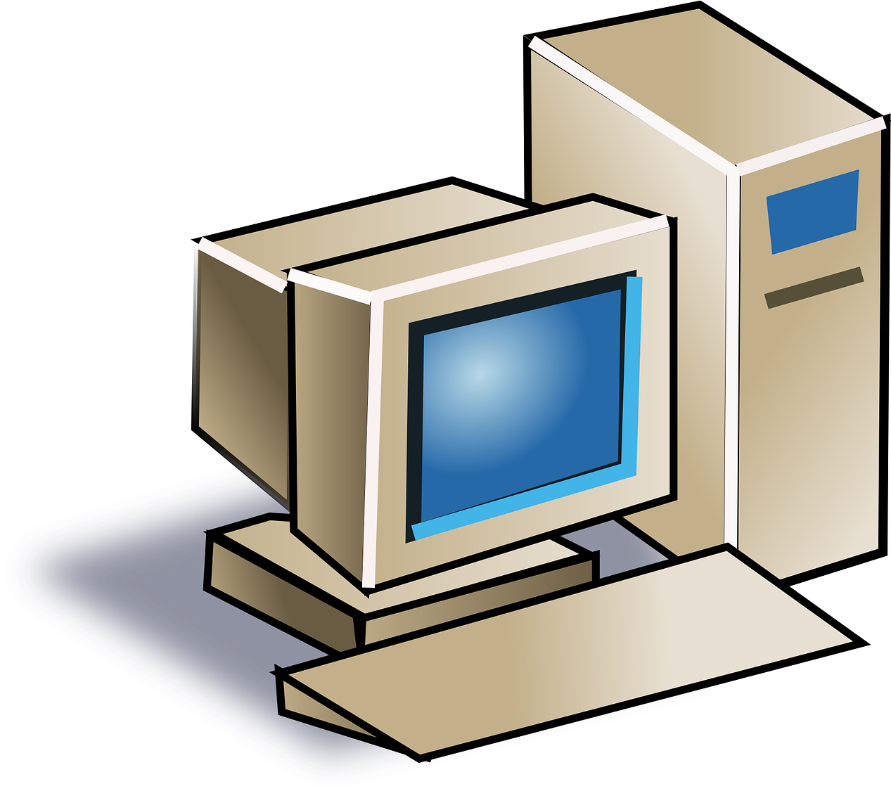
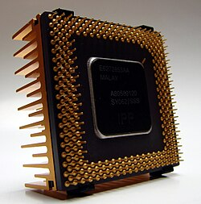
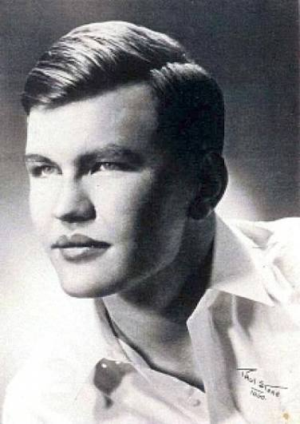
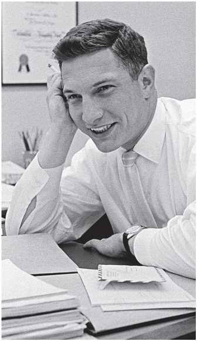
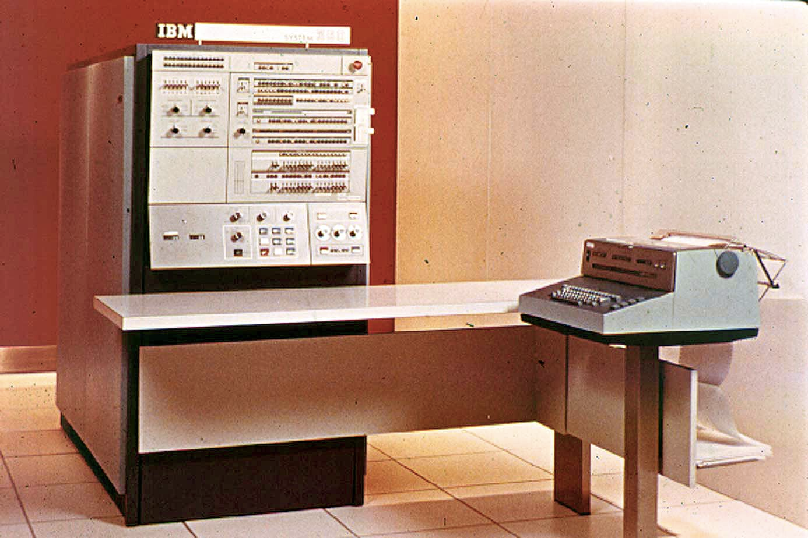
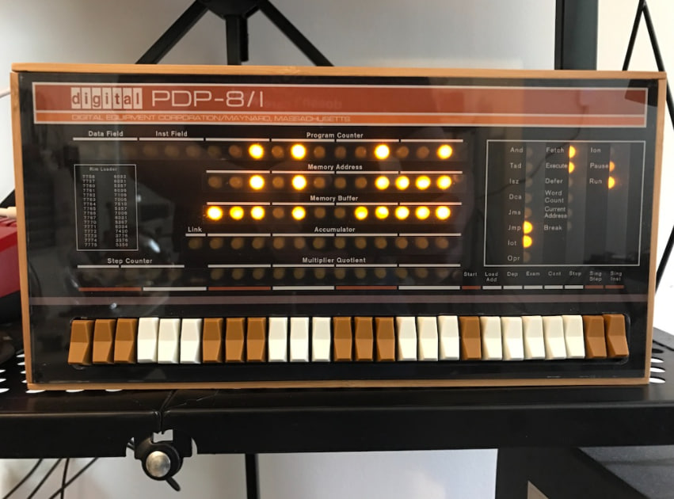

ГоловнаТретє покоління комп’ютерів (приблизно 1964–1971 роки) характеризується переходом до інтегральних схем, що дозволило об’єднати тисячі транзисторів в одному мікрочипі.
Це стало революційним кроком, який значно підвищив швидкість обробки даних, зменшив розміри комп’ютерів і зробив їх доступнішими для широкого використання.
У 1960-х роках розвиток напівпровідникових технологій досяг нового рівня. Винайдення інтегральних схем дозволило об’єднувати багато електронних компонентів на одному кристалі кремнію.
Це призвело до різкого зростання продуктивності та зниження вартості комп’ютерів. Вони почали активно використовуватись у промисловості, освіті та державному управлінні.
Основою третього покоління стали інтегральні схеми (мікросхеми), які поєднували в собі велику кількість транзисторів на одному чіпі.

Це дозволило: зменшити розміри комп’ютерів, підвищити їх швидкість, збільшити надійність систем.

Винайшов першу інтегральну схему.

Співзасновник Intel, розвинув інтегральні схеми.
Одна з найважливіших комп’ютерних систем в історії. Вперше створила універсальну архітектуру, сумісну між різними моделями.
Використовувалась у бізнесі, науці та урядових структурах.

Один із перших мінікомп’ютерів, який зробив обчислювальну техніку доступнішою.
Його використовували в лабораторіях, університетах і промисловості.

У третьому поколінні активно розвиваються операційні системи, які дозволяють керувати ресурсами комп’ютера більш ефективно.
З’являється багатозадачність — можливість виконання кількох програм одночасно.
Мови програмування стають більш структурованими та наближеними до людської мови.